Carpet Grand Prix · Visual Benchmark 01
Bahrain.
The Carpet Desert Grand Prix.
Eine Wüsten-Rennstrecke aus Teppich, Garn, Papier und Holzspielzeug. Diese Galerie zeigt ausschließlich Aufnahmen aus dem laufenden WebGL-Spiel: normale Tastaturfahrt, echte Gegner und die unveränderte Verfolgungskamera.
Bahrain-Testfahrt starten →
13 Fahrzeuge8 RundenUnveränderte FahrphysikOriginalporträts erhaltenDesktop & Mobilformat
Abnahmefassung auf eigenem Entwicklungsbranch. Die Vergleichsfahrten wurden separat gefahren; Bildposition und Gegnerabstände können leicht abweichen. Die Mobilaufnahmen stammen aus Chromium im Handyformat und ersetzen keinen Test auf einem echten iPhone.
01 · Die Startaufstellung
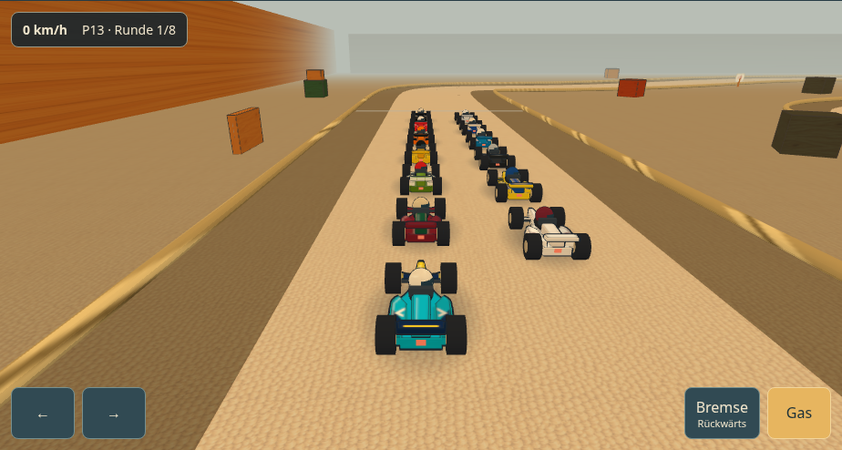
Vorher · Ausgangsstand 34a7c07
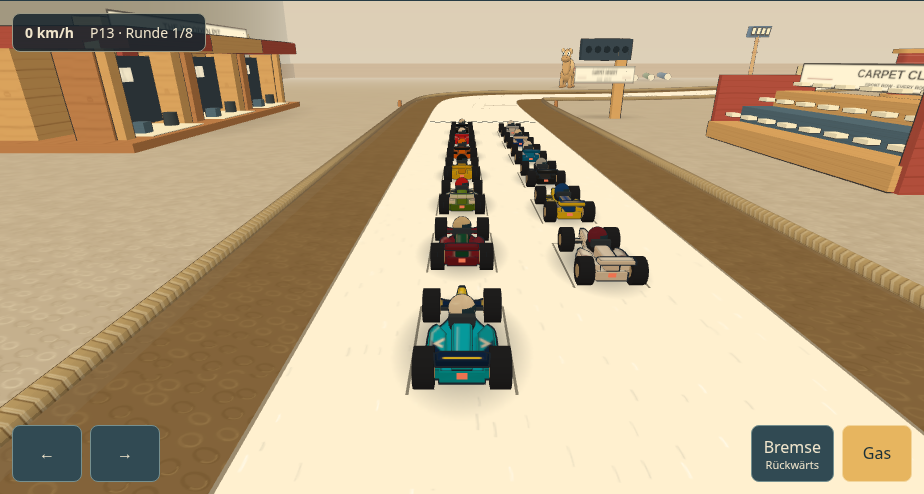
Nachher · matte Fahrbahn, Garnbegrenzungen und neue Startmarkierungen
02 · Kurven, Teppich und Garn
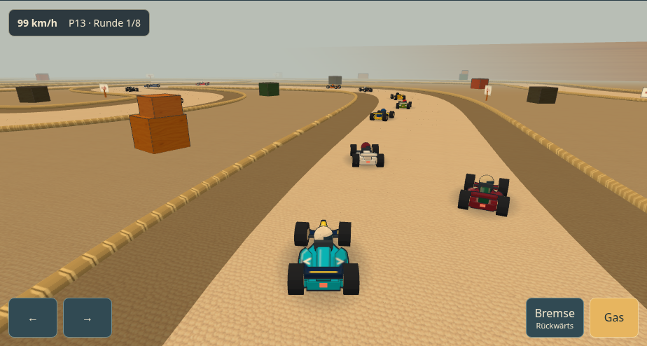
Vorher
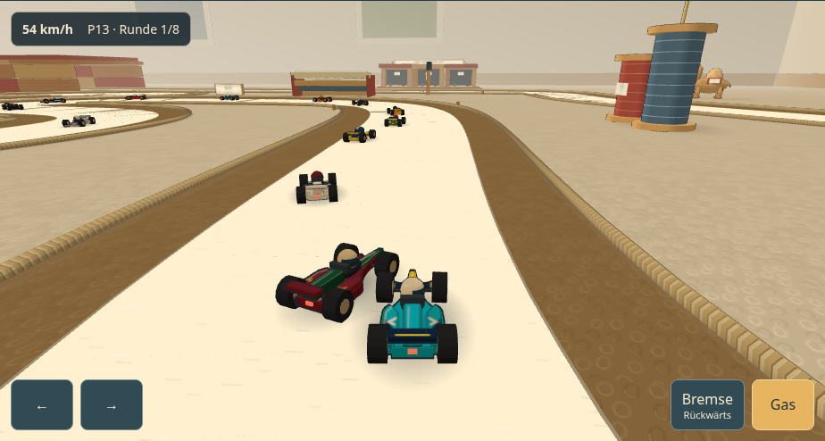
Nachher · klare Flächen und charaktervolle Requisiten
03 · Die Bauklotz-Boxenanlage
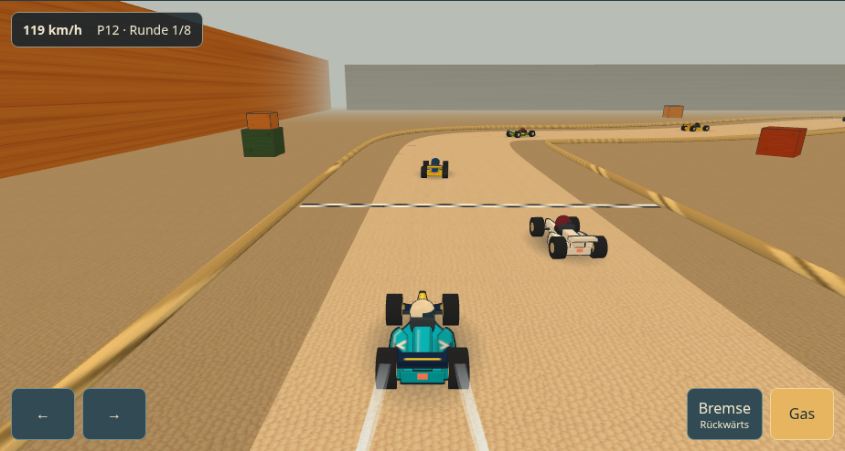
Vorher
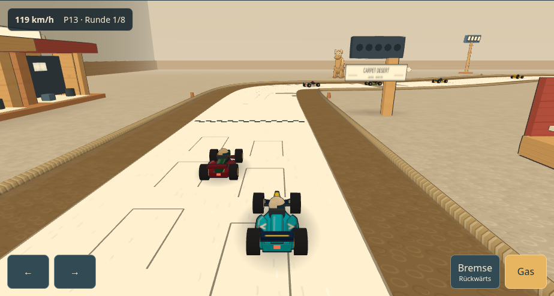
Nachher · drei offene Buchten, Papierbeschilderung und Stellflächen
04 · Einfahrt und Fahrt durch den Bauklotztunnel
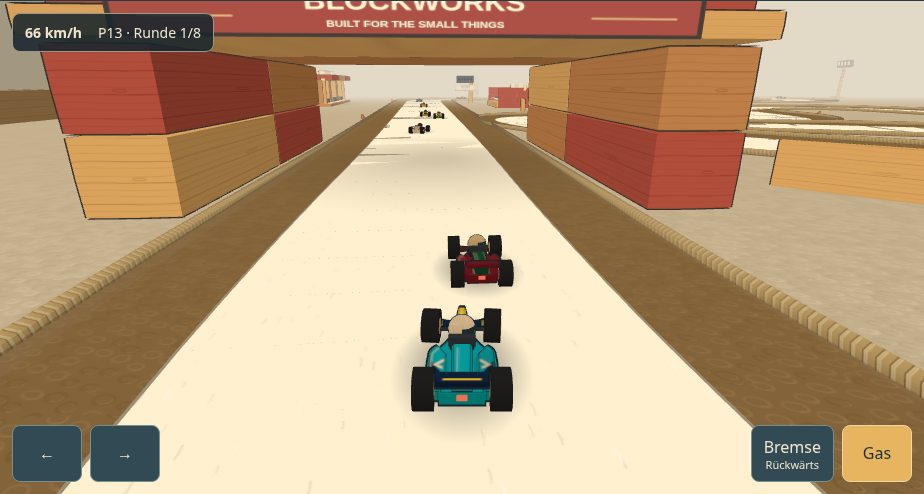
Einfahrt · auf der vorhandenen langen Geraden
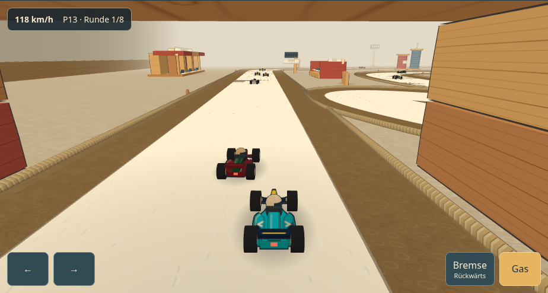
Durchfahrt · 63 Einheiten breit, 22 hoch; die Kamera bleibt auf 17 Höhe
05 · Das Stoffkamel
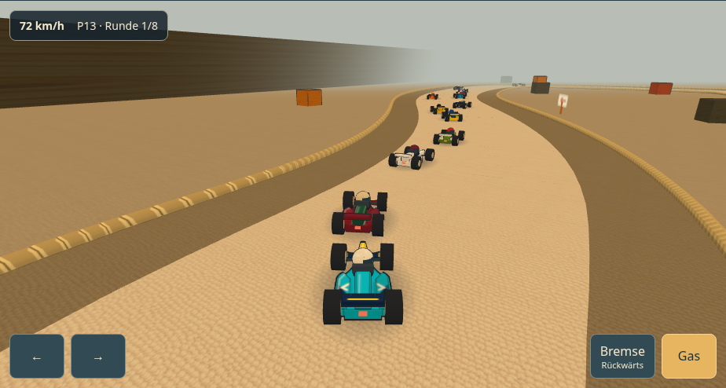
Vorher · Spielzeugklötze ohne Streckenidentität
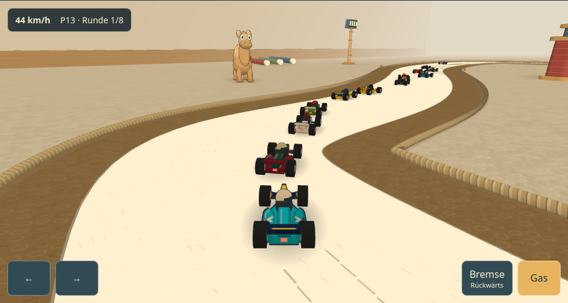
Nachher · ein genähtes Spielzeug als Bahrain-Landmarke
06 · Start und Ziel
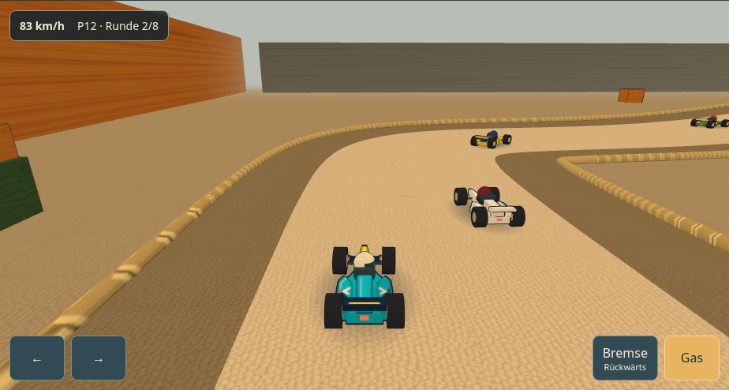
Vorher
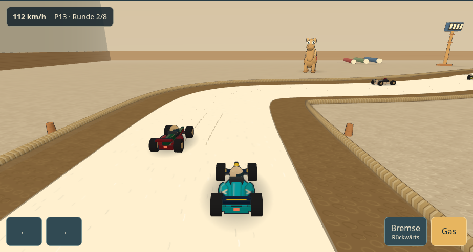
Nachher · gleiche Startpositionen und Zeitnahme, neue Inszenierung
07 · Mobilformat
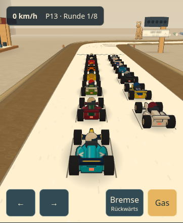
390 × 844 · unveränderte Mehrfinger-Steuerung
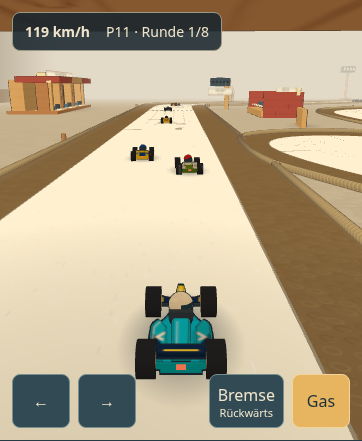
Die Durchfahrt bleibt auch im Hochformat lesbar
Technische Abnahme
Vollständige Fahrten, Kamera- und Geometrieprüfungen sowie Vorher-/Nachher-Messwerte sind im Pull Request dokumentiert. Die Dekoration greift nicht auf Physik, KI, Zeitnahme oder Spielstände zu. Alle Marken in der neuen Umgebung sind fiktiv.
Die ursprünglichen d001–d035-PNGs sind unverändert. Die anderen 21 Strecken behalten ihre bisherige Gestaltung.